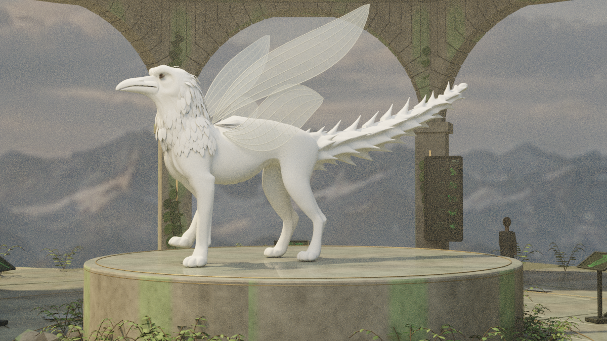

Gözlemevi hazırlanıyor
3D görüntü açılamadı. Son sahnenin önizlemesi gösteriliyor.
YENİDEN DENE
ALARM
DİLARA ALTINKEPÇE ARSLAN
İLK AÇI
360°
HAREKET: AÇIK
GÖRÜNTÜ: DENGELİ
Sesi aç
SES
Tam ekran
KANALLAR
2076 / MODERN ÇAĞ GRİFONU
Beş karakter. Tek beden.